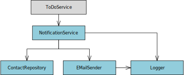

Függőséginjektálás ASP.NET Core környezetben¶
Definíció
Függőséginjektálás (Dependency Injection, röviden DI) egy tervezési minta. A fejlesztőket segíti abban, hogy az alkalmazás egyes részei laza csatolással kerüljenek kialakításra.
A függőséginjektálás egy mechanizmus arra, hogy az osztály függőségi gráfjainak létrehozását függetlenítsük az osztály definíciójától.
Célok
- könnyebb bővíthetőség és karbantarthatóság
- unit tesztelhetőség
- kód újrafelhasználhatóság
Természetesen a fenti definícóból önmagában nem derül ki, pontosan milyen problémákat és milyen módon old meg a függőséginjektálás. A következő fejezetekben egy példa segítségével helyezzük kontextusba a problémakört, illetve példa keretében megismerkedünk az ASP.NET Core beépített DI szolgáltatásának alapjaival.
Minta alkalmazás
A C# forráskód egész itt érhető el: https://github.com/bmeviauac01/todoapi-di-sample
Példa 1. fázis - szolgáltatás osztály beégetett függőségekkel¶
A példánkban egy teendőlista (TODO) kezelő alkalmazás e-mail értesítéseket küldő részeibe tekintünk bele, kódrészletek segítségével. Megjegyzés: a kód a tömörség érdekében minimalisztikus.
A példánk "belépési pontja" a ToDoService osztály SendReminderIfNeeded művelete.
// Teendők kezelésére szolgáló osztály
public class ToDoService
{
const string smtpAddress = "smtp.myserver.com";
// Megvizsgálja a paraméterként kapott todoItem objektumot, és ha szükséges,
// e-mail értesítést küld a teendőről a teendőben szereplő kontakt személynek.
public void SendReminderIfNeeded(TodoItem todoItem)
{
if (checkIfTodoReminderIsToBeSent(todoItem))
{
NotificationService notificationService = new NotificationService(smtpAddress);
notificationService.SendEmailReminder(todoItem.LinkedContactId, todoItem.Name);
}
}
bool checkIfTodoReminderIsToBeSent(TodoItem todoItem)
{
bool send = true;
/* ... */
return send;
}
// ...
}
// Entitásosztály, egy végrehajtandó feladat adatait zárja egységbe
public class TodoItem
{
// Adatbázis kulcs
public long Id { get; set; }
// Teendő neve/leírása
public string Name { get; set; }
// Jelzi, hogy a teendő elvégésre került-e
public bool IsComplete { get; set; }
// Egy teendőhöz lehetőség van kontakt személy hozzárendelésére: ha -1, nincs
// kontakt személy hozzárendelve, egyébként pedig a kontakt személy azonosítója.
public int LinkedContactId { get; set; } = -1;
}
A fenti kódban (ToDoService.SendReminderIfNeeded) azt látjuk, hogy az e-mail küldés lényegi logikáját a NotificationService osztályban kell keresnünk. Valóban, vizsgálódásunk központjába ez az osztály kerül. A következő kódrészlet ezen osztály kódját, valamint a függőségeit mutatja be:
// Értesítések küldésére szolgáló osztály
class NotificationService
{
// Az osztály függőségei
EMailSender _emailSender;
Logger _logger;
ContactRepository _contactRepository;
public NotificationService(string smtpAddress)
{
_logger = new Logger();
_emailSender = new EMailSender(_logger, smtpAddress);
_contactRepository = new ContactRepository();
}
// E-mail értesítést küld az adott azonosítójú kontakt személynek (a contactId
// egy kulcs a Contacts táblában)
public void SendEmailReminder(int contactId, string todoMessage)
{
string emailTo = _contactRepository.GetContactEMailAddress(contactId);
string emailSubject = "TODO reminder";
string emailMessage = "Reminder about the following todo item: " + todoMessage;
_emailSender.SendMail(emailTo, emailSubject, emailMessage);
}
}
// Naplózást támogató osztály
public class Logger
{
public void LogInformation(string text) { /* ...*/ }
public void LogError(string text) { /* ...*/ }
}
// E-mail küldésre szolgáló osztály
public class EMailSender
{
Logger _logger;
string _smtpAddress;
public EMailSender(Logger logger, string smtpAddress)
{
_logger = logger;
_smtpAddress = smtpAddress;
}
public void SendMail(string to, string subject, string message)
{
_logger.LogInformation($"Sendding e-mail. To: {to} Subject: {subject} Body: {message}");
// ...
}
}
// Contact-ok perzisztens kezelésére szolgáló osztály
public class ContactRepository
{
public string GetContactEMailAddress(int contactId)
{
// ...
}
// ...
}
Pár általános gondolat:
- A
NotificationServiceosztály több függőséggel rendelkezik (EMailSender,Logger,ContactRepositoryosztályok), ezen osztályokra építve valósítja meg a szolgáltatásait. - A függőség osztályoknak lehetnek további függőségeik: az
EMailSenderremek példa erre, épít aLoggerosztályra. - Megjegyzés: a
NotificationService,EMailSender,Logger,ContactRepositoryosztályokat szolgáltatásosztályoknak tekintjük, mert tényleges logikát is tartalmaznak, nem csak adatokat zárnak egységbe, mint pl. aTodoItem.
Mint látható, a SendEmailReminder műveletet egy objektumgráf szolgálja ki, ahol a NotificationService a gyökérobjektum, melynem három függősége van, és a függőségeinek (legalábbis az EMailSender-nek) vannak további függőségei. A következő ábra ezt az objektumgráfot illusztrálja:

Megjegyzés
Felmerülhet bennünk a kérdés, mért a NotificationService-t, és nem a ToDoService-t tekintjük gyökérobjektumnak. Valójában ez csak a nézőpontunkon múlik: az egyszerűség kedvéért a ToDoService-t egyfajta belépési pontnak ("kliensnek") tekintjük a kérés vonatkozásában annak érdekében, hogy kevesebb osztályt kelljen a következőkben megvizsgálnunk és átalakítanunk. Egy való életbeli alkalmazásban a ToDoService-t is jó eséllyel a függőségi gráf részének tekintenénk.
Tekintsük át a megoldás legfontosabb jellemzőit:
- Az osztály a függőségeit maga példányosítja
- Az osztály a függőségei konkrét típusától függ (nem pedig interfészektől, "absztrakcióktól")
Ez a megközelítés több súlyos negatívummal bír:
- Rugalmatlanság, nehéz bővíthetőség. A
NotificationService(módosítás nélkül) nem tud más levélküldő, naplózó és contact repository implementációkkal együtt működni, csak a beégetettEMailSender,LoggerésContactRepositoryosztályokkal. Vagyis pl. nem tudjuk más naplózó komponenssel, vagy pl. olyan contact repository-vel használni, amely más adatforrásból dolgozik. - Unit tesztelhetőség hiánya. A
NotificationService(módosítás nélkül) nem unit tesztelhető. Ehhez ugyanis le kell cserélni azEMailSender,LoggerésContactRepositoryfüggőségeit olyanokra, melyek (tesztelést segítő) egyszerű/rögzített válaszokat viselkedést mutatnak. Ne feledjük: a unit tesztelés lényege, hogy egy osztály viselkedését önmagában teszteljük (pl. az adatbázist használó ContactRepository helyett egy olyan ContactRepository-ra van szükség, mely gyorsan, memóriából szolgálja ki a kéréseket, a teszt előfeltételeinek megfelelően). - Van még egy, első ránézésre nehezen észrevehető kellemetlen következmény: a példánkban a
smtpAddressparamétert is át kell adni aNotificationServicekonstruktorának, azért, hogy azt továbbítani tudja az általa példányosítottEMailSenderfüggőségének. Ugyanakkor asmtpAddressaNotificationServiceszámára egy transzparens, "értelmeten" információ, elviekben "semmi köze hozzá". Sajnos jelen pillanatban mégis át kell vezetni rajta, mert ő példányosítja azEMailSender-t, aki számára ez az információ releváns.
A következő lépésben úgy alakítjuk át a megoldásunkat, hogy a negatívumok többségétől meg tudjunk szabadulni.
Példa 2. fázis - szolgáltatás osztály manuális függőség injektálással¶
A korábbi megoldásunkat alakítjuk át, a funkcionális követelmények változatlanok. Az átalakítás legfontosabb irányelvei: a függőségeket absztrakciókra, "interfész alapokra" helyezzük, és az osztályok nem maguk példányosítják a függőségeiket.
public class ToDoService
{
const string smtpAddress = "smtp.myserver.com";
// Megvizsgálja a paraméterként kapott todoItem objektumot, és ha szükséges,
// e-mail értesítést küld a teendőről a teendőben szereplő kontakt személynek.
public void SendReminderIfNeeded(TodoItem todoItem)
{
if (checkIfTodoReminderIsToBeSent(todoItem))
{
var logger = new Logger();
var emailSender = new EMailSender(logger, smtpAddress);
var contactRepository = new ContactRepository();
NotificationService notificationService
= new NotificationService(logger, emailSender, contactRepository);
notificationService.SendEmailReminder(todoItem.LinkedContactId,
todoItem.Name);
}
}
bool checkIfTodoReminderIsToBeSent(TodoItem todoItem)
{
bool send = true;
/* ... */
return send;
}
}
// Értesítések küldésére szolgáló osztály
class NotificationService
{
// Az osztály függőségei
IEMailSender _emailSender;
ILogger _logger;
IContactRepository _contactRepository;
public NotificationService(ILogger logger, IEMailSender emailSender,
IContactRepository contactRepository)
{
_logger = logger;
_emailSender = emailSender;
_contactRepository = contactRepository;
}
// E-mail értesítést küld az adott azonosítójú kontakt személynek (a contactId
// egy kulcs a Contacts táblában)
public void SendEmailReminder(int contactId, string todoMessage)
{
string emailTo = _contactRepository.GetContactEMailAddress(contactId);
string emailSubject = "TODO reminder";
string emailMessage = "Reminder about the following todo item: " + todoMessage;
_emailSender.SendMail(emailTo, emailSubject, emailMessage);
}
}
#region Contracts (abstractions)
// Naplózást támogató interfész
public interface ILogger
{
void LogInformation(string text);
void LogError(string text);
}
// E-mail küldésre szolgáló interfész
public interface IEMailSender
{
void SendMail(string to, string subject, string message);
}
// Contact-ok perzisztens kezelésére szolgáló interfész
public interface IContactRepository
{
string GetContactEMailAddress(int contactId);
}
#endregion
#region Implementations
// Naplózást támogató osztály
public class Logger: ILogger
{
public void LogInformation(string text) { /* ...*/ }
public void LogError(string text) { /* ...*/ }
}
// E-mail küldésre szolgáló osztály
public class EMailSender: IEMailSender
{
ILogger _logger;
string _smtpAddress;
public EMailSender(ILogger logger, string smtpAddress)
{
_logger = logger;
_smtpAddress = smtpAddress;
}
public void SendMail(string to, string subject, string message)
{
_logger.LogInformation($"Sendding e-mail. To: {to} Subject: {subject} Body: {message}");
// ...
}
}
// Contact-ok perzisztens kezelésére szolgáló osztály
public class ContactRepository: IContactRepository
{
public string GetContactEMailAddress(int contactId)
{
// ...
}
// ...
}
#endregion
A korábbi megoldást a következő pontokban fejlesztettük tovább:
- A
NotificationServiceosztály már nem maga példányosítja a függőségeit, hanem konstruktor paraméterekben kapja meg. - Interfészeket (absztrakciókat) vezettünk be a függőségek kezelésére.
- A
NotificationServiceosztály a függőségeit interfészek formájában kapja meg. Azt, amikor egy osztály a függőségeit kívülről kapja meg, DEPENDENCY INJECTION-nek (DI) vagyis függőséginjektálásnak nevezzük. - Esetünkben konstruktor paraméterekben kapják meg az osztályok függőségeiket. A DI ezen formáját CONSTRUCTOR INJECTION-nek (konstruktor injektálás) nevezzük. Ez a függőséginjektálás legyakoribb - és leginkább javasolt módja (alternatíva pl. a property injection, amikor is publikus property setter segítségével állítjuk be az osztály adott függőségét).
Megoldásunkban a NotificationService függőségeit az osztály (közvetlen) FELHASZNÁLÓJA példányosítja (ToDoService osztály). Elsődlegesen ebből eredően a következő problémák állnak még fent:
- A
NotificationServicefelhasználója, vagyis aToDoService.SendReminderIfNeededmég mindig függ a konkrét implementációs típusoktól (hiszen neki szükséges példányosítania aLogger,EMailSenderésContactRepositoryosztályokat). - Ha az alkalmazásunkban több helyen használjuk a
Logger,EMailSenderésContactRepositoryosztályokat, mindenhol külön-külön explicit példányosítani kell őket. Vagyis mindenhol külön-külön dönteni kell és meg kell adni, hogy milyen absztrakció (interfész típus) esetén milyen implementációs típust használunk az alkalmazásban. Ez a kód/logika duplikáció speciális, kissé nehezen kiszúrható esete. - A célunk ezzel szemben az lenne, hogy egyetlen központi helyen határozzuk meg hogy milyen absztrakció (interfész típus) esetén milyen implementációs típust kell mindenhol használni az alkalmazásban (pl. ILogger->Logger, IMailSender->EMailSender).
- Ezáltal egyrészt egy helyen, könnyen át tudnánk tekinteni a leképezéseinket.
- Másrészt ha meg akarjuk változtatni az egyik leképezést (pl. ILogger esetén Logger helyett AdvancedLogger használata), azt elég egy központi helyen megtenni.
Példa 3. fázis - függőségek injektálása .NET Core Dependency Injection alapokon¶
Az előző fejezetben zárógondolatként megfogalmazott két probléma megoldására már némi extra segítségre van szükségünk: egy Inversion of Control (IoC) konténerre. Egy IoC konténerbe absztrakciós típus -> implementációs típus leképezéseket tudunk tárolni (REGISTER), majd ezt követően absztrakciós típus alapján implementációs típusokat példányosítani (RESOLVE). Részletesebben:
- REGISTER (regisztráció): Az alkalmazás indulásakor egyszer, központosítva egy Inversion of Control (IoC) konténerbe beregisztráljuk a függőségi leképezéseket (pl. ILogger->Logger, IMailSender->EMailSender). Ez a DI folyamat REGISTER lépése.
- Megjegyzés: ezzel megoldottuk az előző fejezeben felvezetett 2. problémát, a leképezéseket egy központi helyen és nem az alkalmazásban szétszórva adjuk meg.
- RESOLVE (függőségfeloldás): Amikor az alkalmazás futásakor szükségünk van egy implementációs objektumra, a konténertől az absztrakció (interfészt) típusát megadva kérünk egy implementációt (pl. ILoggert megadva egy Logger objektumot kapunk).
- A resolve lépést az alkalmazás "belépési pontjában" tesszük meg (pl. WebApi esetén az egyes API kérések beérkezésekor). A feloldást a konténertől csak a "ROOT OBJECT"-re (pl. WebApi esetén a megfelelő Controller osztályra) kérjük explicit módon: ez legyártja a root objectet, illetve annak valamennyi függőségét, és valamennyi közvetett függőségét: előáll egy objektumgráf. Ez az AUTOWIRING folyamata.
- Megjegyzés: Web API esetén a Resolve lépést a keretrendszer végzi el: mi csak annyit tapasztalunk, hogy a controller osztályunk automatikusan példányosítódik, és valamennyi konstruktor paramétere automatikusan kitöltésre kerül (a REGISTER lépés regisztrációi alapján).
Szerencsére a .NET Core rendelkezik IoC Container alapú dependency injection szolgáltatással. A következőkben a továbbfejlesztett e-mail értesítő megoldásunkat példaként használva világítjuk meg jobban a mechanizmust.
1) REGISTER lépés (függőségek beregisztrálása)¶
Asp.Net Core környezetben a függőségek beregisztrálása a Startup osztályunk ConfigureServices(IServiceCollection services) műveletében történik, mégpedig a IServiceCollection AddSingleton, AddTransient és AddScoped műveleteivel. Első lépésben fókuszáljunk a ConfigureServices számunka legizgalmasabb részeire:
public class Startup
{
public void ConfigureServices(IServiceCollection services)
{
// ...
services.AddSingleton<ILogger, Logger>();
services.AddTransient<INotificationService, NotificationService>();
services.AddScoped<IContactRepository, ContactRepository>();
services.AddSingleton<IEMailSender, EMailSender>(
sp => new EMailSender(sp.GetRequiredService<ILogger>(), "smtp.myserver.com") );
// ...
}
A Startup.ConfigureServices-t a keretendszer hívja az alkalmazás indulásakor. Paraméterben egy IServiceCollection services objektumot kapunk, számunkra ez reprezentálja a keretendszer által már előre példányosított IoC konténert, ebbe tudjuk a sajét függőségeinket beregisztrálni. A
services.AddSingleton<ILogger, Logger>();
sorral ILogger típusként a Logger implementációs típust regisztráljuk be (ILogger->Logger leképzés), mégpedig az AddSingleton művelet hatására singleton-ként. Ez azt jelenti, hogy ha később a konténertől egy ILogger objektumot kérünk (resolve), a konténertől egy Logger objektumot kapunk, mégpedig mindig ugyanazt a példányt. A
services.AddTransient<INotificationService, NotificationService>();
sorral INotificationService típusként a NotificationService implementációs típust regisztáljuk be (INotificationService->NotificationService leképzés), mégpedig az AddTransient művelet hatására tranziens módon. Ez azt jelenti, hogy ha később a konténertől egy INotificationService objektumot kérünk (resolve), a konténertől egy NotificationService objektumot kapunk, mégpedig minden lekérdezéskor egy újonnan létrehozott példányt. A
services.AddScoped<IContactRepository, ContactRepository>();
sor IContactRepository típusként a ContactRepository implementációs típust regisztrálja be (IContactRepository->ContactRepository leképzés), mégpedig az AddScoped művelet hatására scope-olt módon. Ez azt jelenti, hogy ha később a konténertől IContactRepository objektumot kérünk (resolve), ContactRepository objektumot kapunk, mégpedig adott hatókörön belül ugyanazt, eltérő hatókörökben másokat. A Web API alkalmazásoknál egy-egy API kérés kiszolgálása számít egy-egy megfelelő hatókörnek: vagyis a konténertől egy kérés kiszolgálása során ugyanazt az objektumpéldányt, eltérő kérések esetén másokat kapunk.
A mintaalkalmazás Startup.ConfigureServices-ben további regisztrációkkal is találkozunk, ezekre később térünk vissza.
2) RESOLVE lépés (függőségek feloldása)¶
Alapok¶
Jelen pillanatban ott tartunk, hogy az alkalmazás indulásakor beregisztráltuk a szolgáltatás típusok függőségi leképezéseit az ASP.NET Core IoC konténerébe. A típusleképezéseink a következők:
- ILogger -> Logger, singletonként
- INotificationService -> NotificationService, tranziensként
- IContactRepository -> ContactRepository, scope-oltként
- IEMailSender -> EMailSender, singletonként
Ezt követően, amikor szükségünk van egy adott implementációs típusra, a konténertől az (absztrakciós) típus, mint kulcs alapján kérhetünk egy implementációs példányt. Ennek során ASP.NET Core környezetben a konténert egy IServiceProvider hivatkozás formájában kapjuk meg, és a GetService művelet különböző formáit használjuk. Pl.:
void SimpleResolve(IServiceProvider sp)
{
// Mivel az ILogger típushoz a Logger osztályt regisztráltuk,
// egy Logger példánnyal tér vissza.
var logger1 = sp.GetService(typeof(ILogger));
// A típus generikus paraméterben is megadhatjuk, kényelmesebb, ezt szoktuk használni.
// Ehhez szükség van a Microsoft.Extensions.DependencyInjection névtér using-olására,
// mert ez a GetService forma ott definiált extension methodként.
// Mivel az ILogger típushoz a Logger osztályt regisztráltuk,
// egy Logger példánnyal tér vissza.
var logger2 = sp.GetService<ILogger>();
// Míg a GetService null-t ad vissza, ha nem sikerül feloldani a
// konténer alapján a hivatkozást, a GetRequiredService kivételt dob.
var logger3 = sp.GetRequiredService<ILogger>();
// ...
}
A példában kódkommentek részletesen elmagyarázzák a viselkedést. Minden esetben a lényeg az, hogy vagy a typeof operátorral, vagy generikus paraméterben megadunk egy absztrakciós típust, és a GetService egy az ahhoz beregisztrált implementációs típussal tér vissza.
Objektumgráf feloldása, autowiring¶
Az előző példánkban a konténer a feloldás során komolyabb "fejtörés" nélkül tudta a Logger osztályt példányosítani, ugyanis annak nincsenek további függőségei: egyetlen default konstruktorral rendelkezik.
Tekintsük most az INotificationService feloldását:
public void ObjectGraphResolve(IServiceProvider sp)
{
var notifService = sp.GetService<INotificationService>();
// ...
}
A feloldás (GetService hívás) során a konténernek egy NotificationService objektumot kell létrehoznia. Ez csak úgy lehetséges, ha minden konstruktor paraméternének megfelelő objektumot ad meg. Ez a gyakorlatban azt jelenti, hogy a létrehozás során feloldja az osztály közvetlen és közvetett függőségeit, rekurzívan:
- A NotificationService osztály egy háromparaméteres konstruktorral rendelkezik (vagyis három függősége is van):
NotificationService(ILogger logger, IEMailSender emailSender, IContactRepository contactRepository). A konstruktorparamétereket aGetServiceegyesével feloldja a regiszrációk alapján:ILoggerlogger: egyLoggerobjektum lesz, mindig ugyanaz (mert singleton)IEMailSenderemailSender:EMailSenderobjektum lesz, minden alkalommal más (mert transient)- Ennek van egy
ILoggerlogger konstruktor parammétere, amit fel kell oldani:- Egy
Loggerobjektum lesz, mindig ugyanaz (mert singleton)
- Egy
- Ennek van egy
IContactRepositorycontactRepository:ContactRepositoryobjektum lesz, hatókörönként - Web API estenén API hívásonként - más (mert scoped).
A feloldás végére - vagyis amikor visszatér a fenti GetService<INotificationService>() hívás - előáll a teljesen felparaméterezett NotificationService objektum, valamennyi közvetlen és közvetett függőségével, vagyis egy objektumgráf-ot kapunk:

A DI keretrendszer/IoC konténerek azon tulajdonságát, hogy az objektumok függőségeinek felderítésével (a gyakorlatban jellemzően a konstruktor paraméterek felderítésével) a beregisztrált absztrakció->implementáció leképezések alapján képes objektumgráfokat előállítani autowiring-nek nevezzük.
Függőségfeloldás ASP.NET Web API osztályok esetén¶
Azon túl, hogy a megoldásunkat konténer alapokra helyezzük, pár további változtatást is végrehajtunk a todo alkalmazásunkon. A ToDoService osztályt megszüntetjük, a funkcionalitását kicsit más formában egy ASP.NET Core ControllerBase leszármazott TodoController osztályba mozgatjuk. Ez az osztály lesz a belépsési pont és a gyökérobjektum a kérés kiszolgálása során. Ezáltal a megoldásunk jobban tükrözi egy valós Web API, MVC Web app, illetve Web Razor Pages app alkalmazás megközelítését. A ToDoService osztályt megtarthattuk volna a hívási/függőségi láncunk közepén, de demonstrálási céljainkat jobban szolgálja egy egyszerűsített megközelítés. Ezen túlmenően bevezetünk egy Entity Framework DbContext leszármazott TodoContext osztályt annak érdekében, hogy demonstrálni tudjuk, miképpen történhet ennek injektálása a repository vagy egyéb osztályainkba. Az objektumgráfunk a következőképpen néz ki:

Az előző két fejezetben feltettük, hogy a GetService hívásához egy IServiceProvider objektum rendelkezésre áll. Ha mi magunk hozunk létre egy konténert, akkor ez így is van. Azonban csak a legritkább esetben szoktunk konténert közvetlenül létrehozni. Egy tipikus ASP.NET Web API alkalmazás esetén a konténert a keretrendszer hozza létre, és számunkra közvetlenül nem is hozzáférhető. Ennek következtében IServiceProviderhez - pár induláskori konfigurációs és kiterjesztési pontot eltekintve - hozzáférést nem is kapunk. A jó hír az, hogy erre nincs is szükség. A DI alapkoncepciójába ugyanis az is beletartozik, hogy a függőségfeloldást csak az alkalmazás belépési pontjában a "root object"-re (gyökérobjektum) végezzük el. Web API esetében a belépési pontot az egyes API kérések kiszolgálása jelenti. Amikor beérkezik egy kérés, akkor az Url és a rooting szabályok alapján a keretrendszer meghatározza, mely Controller/ControllerBase leszármazott osztályt kell példányosítani, és azt létre is hozza. Amennyiben a controller osztálynak vannak függőségei (konstruktor paraméterek), azok is feloldásra kerülnek a beregisztrált leképezések alapján, beleértve a közvetett függőségeket is. Előáll a teljes objektumgráf, a root object maga a controller osztály.
Nézzük ezt a gyakorlatban a korábbi példánk továbbfejleszésével, melyet egy TodoController osztállyal egészítettünk ki:
[Route("api/[controller]")]
[ApiController]
public class TodoController : ControllerBase
{
// A TodoController osztály függőségei
private readonly TodoContext _context; // ez egy DbContext
private readonly INotificationService _notificationService;
// A függőségeket konstruktor paraméterben kapja meg.
public TodoController(TodoContext context, INotificationService notificationService)
{
_context = context;
_notificationService = notificationService;
// Fill wit some initial data
if (_context.TodoItems.Count() == 0)
{
_context.TodoItems.Add(new TodoItem { Name = "Item1" });
_context.TodoItems.Add(new TodoItem { Name = "Item2", LinkedContactId = 2});
_context.SaveChanges();
}
}
// API kezelőfüggvény e-mail emlékeztető értesítés kiküldésére.
// Példa: http post erre a címre (pl. PostMan-nel):
// http://localhost:58922/api/todo/2/reminder
// Ez a 2-es azonosítójú todo item kontakt személyének értesítést küld a todo itemről.
[HttpPost("{id}/reminder")]
public IActionResult ReminderMessageToLinkedContact(long id)
{
// Todo item kikeresése, használja a _context DbContext objektumot
var item = _context.TodoItems.Find(id);
if (item == null)
return NotFound();
// Emlékeztető e-mail kiküldése
_notificationService.SendEmailReminder(item.LinkedContactId, item.Name);
// Valójában nem hozunk létre semmit, egyszerű OK a válasz
return Ok();
}
// ... további műveletek
}
A http://<gépcím>/api/todo url alá beeső kéréseket a routing szabályok alapján a TodoController osztály kapja meg. Az értesítés kiküldését triggerelő http://<gépcím>/api/todo/<todo-id>/reminder címre érkező post kérést pedig a TodoController.ReminderMessageToLinkedContact művelete. A TodoController-t a keretrendszer példányosítja, minden kéréshez új objektumot hoz létre. Az osztálynak két függősége van, melyeket konstruktor paraméterben kap meg. Az első egy TodoContext objektum, ami egy DbContext leszármazott. A másik a már jól ismert INotificationService. Mint az előző fejezetben láttuk, a DI keretrendszer ezeket is példányosítja a regisztrált leképezések alapján (az összes közvetett függőségeikkel), paraméterként átadja TodoController kontruktornak, ahol ezeket tagváltozókban eltároljuk. Így ezek a beérkező kéréseket kiszolgáló műveletekben, mint pl. a ReminderMessageToLinkedContact-ben már rendelkezésre állnak.
Megjegyzés
A TodoContext feloldása csak akkor lehetséges, ha ezt az IoC konténerbe előzetesen beregisztráltuk. Erre a következő fejezetben térünk ki.
Entity Framework DbContext regisztráció és feloldás¶
Alkalmazásokban - különösen Asp.Net Core esetében - a DbContext használatának két módja lehetséges:
- Minden alkalommal, amikor szükség van rá, egy using blokkban példányosítjuk és fel is szabadítjuk. Így egy beérkező kérés során több DbContext objektumpéldány is felhasználásra kerülhet.
- A
DbContext-et beérkező kérésenként hozzuk létre, egy kérésen belül viszont megosztottan ugyanazt az objektumpéldányt használják az osztályaink. Ez esetben aDbContext-re mint egy osztályok között megosztott repository-ra, pontosabban unit of work-re gondolunk. A bejövő kérés során egyDbContextobjektumot hozunk létre, és ezt injektáljuk be az erre építő osztályoknak.
Ez utóbbi megközelítés megvalósítására remek kézre eső beépített DI alapú megoldást nyújt az ASP.NET Core: a konténerbe induláskor beregisztráljuk a DbContext osztályunkat, mely így a Controller és egyéb függőségei számára automatikusan beinjektálásra kerül.
Nézzük meg, hogyan is történik a TodoContext DbContext leszármazott osztályunk beregisztrálása a példánkban. A regisztráció helye a szokásos Startup.ConfigureServices:
public void ConfigureServices(IServiceCollection services)
{
// ...
services.AddDbContext<TodoContext>(opt => opt.UseInMemoryDatabase("TodoList"));
// ...
}
Az AddDbContext egy a keretrendszer által az IServiceCollection interfészre definiált extension method. Ez a DbContext osztályunk kényelmes beregisztrációját teszi lehetővé. Ennek belsejébe nem látunk bele, mindenesetre lelke a scope-ot regisztráció. "Pszeudokóddal":
services.AddScoped<TodoContext, TodoContext>();
Mint a példában látható, a TodoContext beregisztálása nem egy absztrakcióval történik (nincs ITodoContext interfész), hanem magával a TodoContext implementációs típussal. A DI keretrendszerek/IoC konténerek támogatják, hogy a regisztráció során az absztrakció egy konkrét típus legyen, jellemzősen maga az implementációs típus. Ezt a megközelítést csak indokolt esetben használjuk.
ASP.NET Core környezetben a DbContext leszármazott osztályunk számára soha nem vezetünk be interfészt, hanem az osztályának a típusával kerül beregisztrálásra az IoC konténerbe (a példánkban is TodoContext->TodoContext leképezés történik). A DbContext önmagában is számos perzisztencial providerrel (pl. MSSQL, Oracle, memória, stb.) tud együtt működni, így alkalmazásfüggő, mennyire van értelme absztrahálni. Ha absztraháljuk az adathozzáférést, akkor nem a DbContext-hez vezetünk be interfészt, hanem a Repository tervezési mintát használjuk, és az egyes repository implementációkhoz vezetünk be interfészeket, valamint ezek vonatkozásában történik az IoC konténerben a leképezés (pl. ITodoRepository->TodoRepository). A repository osztályok pedig vagy maguk példányosítják a DbContext objektumokat, vagy konkruktor paraméterben kerül számukra beinjektálásra).
Megjegyzés
Jelen dokumentumnak nem célja állást foglalni abban, mely esetben célszerű Repository vagy egyéb minták segítségével a controller illetve service osztályok számára az EF/DbContext alapú adathozzáférést egy DAL rétegben elrejteni, illetve ezzel szemben mely esetben használjuk a DbContext osztályt közvetlenül a controller/szolgáltatás objektumainkban (vagyis a BLL-ben). Az illusztráció kedvéért a TodoApi alkalmazásunk ebben az értelemben vegyes megoldást alkalmaz: a TodoItem objektumok perzisztálására a szolgáltatás osztályok közvetlenül a DbContext-et használják, míg a Contact-ok kezelésére a Repository mintát használjuk.
A fenti példában az is látható, hogy a AddDbContext során a DbContext (esetünkben TodoContext) regisztrálásakor egy lambda kifejezést is meg tudunk adni:
opt => opt.UseInMemoryDatabase("TodoList")
Ezen a lambda kifejezésünket a konténer a későbbiekben a resolve során - vagyis amikor egy TodoContext példányosítása történik - meghívja, és paraméterként egy opciózó objektumot kapunk (a példában opt argumentum): ennek segítségével lehetőségünk van a létrehozandó TodoContext objektum opciózására, konfigurálására. A példánkban a UseInMemoryDatabase művelet hívásával egy "TodoList" nevű memóriaadatbázist hozunk létre.
Haladó(bb) függőségregisztráció példa¶
Nem kötelező tananyag.
Térjünk ki a Startup.ConfigureServices korábban nem ismertetett részeire.
Az EMailSender beregisztrálása első ránézésre egészen trükkösnek tűnik:
services.AddSingleton<IEMailSender, EMailSender>(
sp => new EMailSender (sp.GetRequiredService<ILogger>(), "smtp.myserver.com") );
A jobb megértés érdekében nézzük meg az EMailSender konstruktorát:
public EMailSender(ILogger logger, string smtpAddress)
{
_logger = logger;
_smtpAddress = smtpAddress;
}
Az EMailSendert a konténernek kell majd a feloldás során példányosítania, ehhez a konstruktor paramétereket megfelelően meg kell tudni adnia. A logger paraméter tejlesen "rendben van", a kontéter ILogger->Logger regisztrációja alapján a konténer fel tudja oldani. Az smtpAddress paraméter értékét viszont nem tudja kitalálni. Az ASP.NET Core a probléma megoldására a keretrendszer "options" mechanizmusát javasolja, mely lehetővé teszi, hogy az értéket valamilyen konfigurációból olvassuk be. Ez számunkra egy messzire vezető szál lenne, így egyszerűsítésképpen más megoldáshoz folyamodtunk. Az AddSingleton (és a többi Add... műveletnek) van olyan overloadja, melyben egy lambda kifejezést tudunk megadni. Ezt a lambdát a konténer a későbbiekben a resolve során (vagyis amikor egy IEMailSender alapján egy EMailSendert kérünk a konténertől) hívja, minden egyes példányosítás során: ebben mi magunk példányosítjuk az EMailSender objektumot, a konstruktor paramétereket az igényeink szerint meghatározva. Sőt, a konténer "van olyan kedves", hogy lambda paraméterben kapunk egy IServiceCollection objektumot (példánkban ez az sp), és ezzel a konténerben már meglévő regisztrációk alapján a GetRequiredService és GetService hívásokkal kényelmesen tudunk típusokat feloldani, amennyiben szükség van rá.
További témakörök¶
Dependency Injection/IoC konténerek általánosságában¶
A .NET Core beépített DI konténer jellemzői:
- Alapszolgáltatásokat nyújt (pl. property injection-t nem támogat).
- Ha ennél többre van szükség, használhatunk más IoC konténert is, az ASP.NET Core együtt tud működni vele.
- Számos .NET (legyen az .NET Core, .NET Framwwork vagy mindkettő) környezetben használható Dependecy Injection/IoC konténer osztálykönyvtár létezik, pl.: AutoFac, DryIoc, LightInject, Castle Windsor, Ninject, StructureMap, SimpleInjector, MEF.
- Microsoft.Extensions.DependencyInjection NuGet package-ben van implementálva (az alapnévtér is ez)
- ASP.NET Core alkalmazások esetén már a .NET projekt létrehozásakor telepítve van. Sőt, mint láttuk: az ASP.NET Core middleware intenzíven használja és épít rá, a runtime konfiguráció/kiterjeszthetőség alappillére.
- Egyéb .NET Core alkalmazások esetén (pl. Console) a Microsoft.Extensions.DependencyInjection NuGet package-dzsel manuálisan kell telepíteni.
- Megjegyzés: a NuGet package használható (teljes) .NET Frameworkkel is, mivel .NET Standard-et támogat.
Service Locator antipattern¶
Az IoC konténerek használatának a dependency injectionnel szemben van egy másik használati módja. Ennek az a lényege, hogy az osztályok számára nem konstruktor paraméterekben adjuk át/injektáljuk be a függőségeiket, hanem azokat az osztályok a metódusaikban az IoC konténertől a GetService művelettel magunk kérdezik le. Ezt a megközelítést Service Locator mintának nevezzük. Ez antipattern-nek tekintendő, ugyanis a kódban szétszórtan, minden egyes függőség feloldásakor használjuk a konténert, így a kódunk nagy része függeni fog magától a konténertől! Ezzel szemben a dependency injection esetében a függőségfeloldást csak az alkalmazás belépési pontjában a "root object"-ekre végezzük el, a kódunk többi része teljesen független a konténertől. Vegyük észre, hogy a korábbi példánkban a TodoController, NotificationService, EMailSender, Logger és ContactRepository osztályainkban sehol nem hivatkoztunk a konténerre (sem IServiceProvider-ként, sem más módon).
ASP.NET Core keretrendszer szolgáltatások¶
Az ASP.NET Core számos beépített szolgáltatással rendelkezik. Pl. ilyen az (MVC) alapú Wep API támogatás is, vagy a felhasználó felülettel is rendelkező MVC/Razor alapú webalkalmazás támogatás.Ezek többsége maga is a DI keretrendszert használja függőséginjektálásra.
ASP.NET Web API esetén a Startup.ConfigureServices-ben szerepelnie kell az alábbi sornak:
services.AddMvc()
.SetCompatibilityVersion(CompatibilityVersion.Version_2_1);
Az AddMvc egy beépített extension metod az IServiceProvider interfészre vonatkozóan, mely számos (messze 100 feletti darabszámú!), a Wep API middleware/pipeline belső működéséhez és konfigurációjához szükséges szolgáltatás és konfigurációs objektumot regisztrál a konténerbe.
.NET Core 3.0-tól kezdve a helyzet némiképp más. Az AddMvc() hívása helyett jellemzően az AddControllers() műveletet hívjuk, mely jelentősen kevesebb konténerregisztrációt von magával.
Szolgáltatás objektumok dispose-olása¶
A konténer az általa létrehozott objektumokra Dispose-t hív, amennyiben az objektumok osztálya implementálja az IDisposable interfészt.